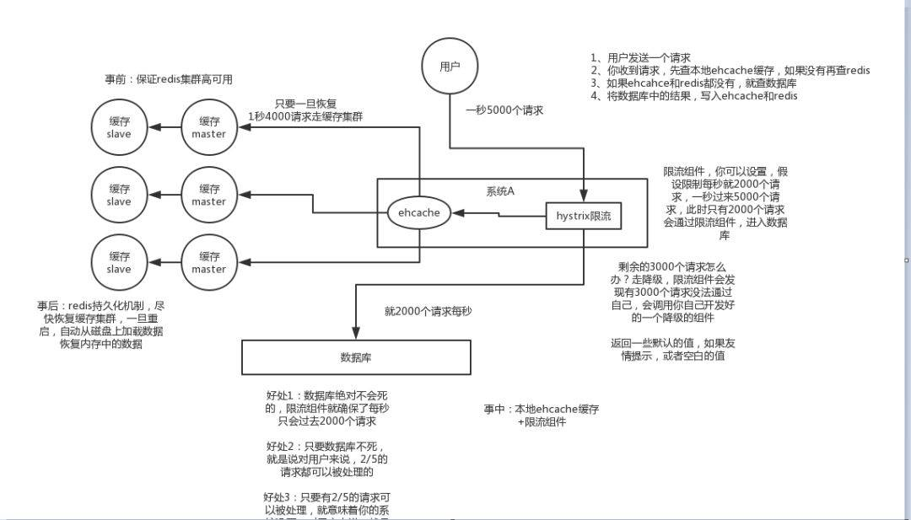

当我们查询一条数据时，先去查询缓存，如果缓存有就直接返回，如果没有就去查询数据库，然后返回。这种情况下就可能会出现一些现象。
2.1 什么是缓存穿透
正常情况下，我们去查询数据都是存在。
那么请求去查询一条压根儿数据库中根本就不存在的数据，也就是缓存和数据库都查询不到这条数据，但是请求每次都会打到数据库上面去。
这种查询不存在数据的现象我们称为缓存穿透。
2.2 穿透带来的问题
试想一下，如果有黑客会对你的系统进行攻击，拿一个不存在的id 去查询数据，会产生大量的请求到数据库去查询。可能会导致你的数据库由于压力过大而宕掉。
2.3 解决办法
2.3.1 缓存空值
之所以会发生穿透，就是因为缓存中没有存储这些空数据的key。从而导致每次查询都到数据库去了。
那么我们就可以为这些key对应的值设置为null 丢到缓存里面去。后面再出现查询这个key 的请求的时候，直接返回null 。
这样，就不用在到数据库中去走一圈了，但是别忘了设置过期时间。
2.3.2 BloomFilter
BloomFilter 类似于一个hbase set 用来判断某个元素（key）是否存在于某个集合中。
这种方式在大数据场景应用比较多，比如 Hbase 中使用它去判断数据是否在磁盘上。还有在爬虫场景判断url 是否已经被爬取过。
这种方案可以加在第一种方案中，在缓存之前在加一层 BloomFilter ，在查询的时候先去 BloomFilter 去查询 key 是否存在，如果不存在就直接返回，存在再走查缓存 -> 查 DB。
流程图如下：
2.4 如何选择
针对于一些恶意攻击，攻击带过来的大量key 是不存在的，那么我们采用第一种方案就会缓存大量不存在key的数据。
此时我们采用第一种方案就不合适了，我们完全可以先对使用第二种方案进行过滤掉这些key。
针对这种key异常多、请求重复率比较低的数据，我们就没有必要进行缓存，使用第二种方案直接过滤掉。
而对于空数据的key有限的，重复率比较高的，我们则可以采用第一种方式进行缓存。
3.1 什么是击穿
缓存击穿是我们可能遇到的第二个使用缓存方案可能遇到的问题。
在平常高并发的系统中，大量的请求同时查询一个 key 时，此时这个key正好失效了，就会导致大量的请求都打到数据库上面去。这种现象我们称为缓存击穿。
3.2 会带来什么问题
会造成某一时刻数据库请求量过大，压力剧增。
3.3 如何解决
上面的现象是多个线程同时去查询数据库的这条数据，那么我们可以在第一个查询数据的请求上使用一个 互斥锁来锁住它。
其他的线程走到这一步拿不到锁就等着，等第一个线程查询到了数据，然后做缓存。后面的线程进来发现已经有缓存了，就直接走缓存。
4.1 什么是缓存雪崩
缓存雪崩的情况是说，当某一时刻发生大规模的缓存失效的情况，比如你的缓存服务宕机了，会有大量的请求进来直接打到DB上面。结果就是DB 称不住，挂掉。
4.2 解决办法
4.2.1 事前：
这种方案就是在发生雪崩前对缓存集群实现高可用，如果是使用 Redis，可以使用 主从+哨兵 ，Redis Cluster 来避免 Redis 全盘崩溃的情况。
4.2.2 事中：
使用 ehcache 本地缓存的目的也是考虑在 Redis Cluster 完全不可用的时候，ehcache 本地缓存还能够支撑一阵。
使用 Hystrix进行限流 & 降级 ，比如一秒来了5000个请求，我们可以设置假设只能有一秒 2000个请求能通过这个组件，那么其他剩余的 3000 请求就会走限流逻辑。
然后去调用我们自己开发的降级组件（降级），比如设置的一些默认值呀之类的。以此来保护最后的 MySQL 不会被大量的请求给打死。
4.2.3 事后：
一旦重启，就能从磁盘上自动加载数据恢复内存中的数据。
防止雪崩方案如下图所示：

我们在设置缓存的时候，一般会给缓存设置一个失效时间，过了这个时间，缓存就失效了。
对于一些热点的数据来说，当缓存失效以后会存在大量的请求过来，然后打到数据库去，从而可能导致数据库崩溃的情况。
5.1 解决办法
5.1.1 设置不同的失效时间
为了避免这些热点的数据集中失效，那么我们在设置缓存过期时间的时候，我们让他们失效的时间错开。
比如在一个基础的时间上加上或者减去一个范围内的随机值。
5.1.2 互斥锁
结合上面的击穿的情况，在第一个请求去查询数据库的时候对他加一个互斥锁，其余的查询请求都会被阻塞住，直到锁被释放，从而保护数据库。
但是也是由于它会阻塞其他的线程，此时系统吞吐量会下降。需要结合实际的业务去考虑是否要这么做。